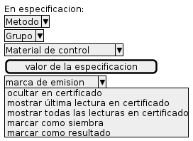
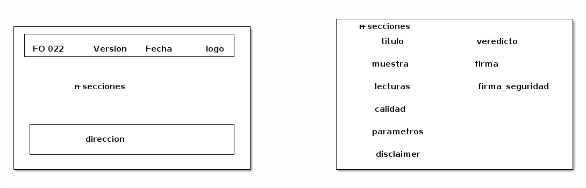
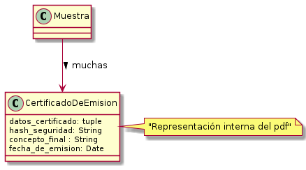
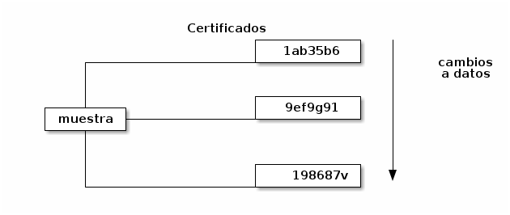
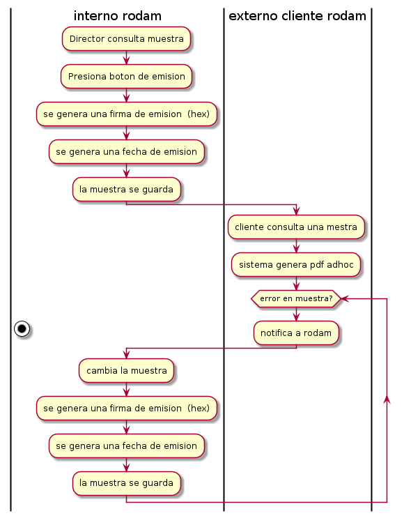

Primero, seguimos con el certificado
Problema:
Pueden haber más lecturas en la muestra que las que
el cliente rodam debe ver
acotamiento
- deben ser posibles n lecturas por especificación en caso de que la
primera no cumpla especificación.
- al momento de emitir no es óptimo
- en catalogo no es posible preveer las combinaciones
de analisis por cuadro analitico
- hay datos en el certificado actual cuya formulacion
algoritmica es ambigua (fecha siemrba, fecha analisis)
Propuesta solución

- la especificacion es por cuadro. Tiene un grado alto de reusabilidad
- más responsabilidad a persona de ingreso
- requiere tiempo de programacion
alternativas
- quitar esos datos del certificado
- siempre hacer deducción algoritmica : siembra < fecha < analisis
- poner todos los datos en certificado
- permitir que el microniologo elimine lecturas antes de remitir a emisión
¿Y ahora, qué tanto hay que programar para el certificado?

- ¿los datos del formato cambiarán?
- pues la direccion sí
- ¿cada persona capaz de emitir tendrá una firma?
- ¿o toda emisión la firma el director del laboratorio?
Problemas en el diseño de emision
Problema: (no sé si me lo inventé)
Es posible que hayan cambios a la muestra luego de la emision de certificado.
No hay una forma unívoca de decidir si un certificado emitido corresponde
con un estado actual de la muestra.
acotamiento
- es bueno (¿obligatorio?) tener un registro de certificados emitidos para una misma muestra
- guardar pdfs es costoso
- comparar dos certificados es un proceso manual
- se solicitó una forma de prevenir falsificacion
Solucion
- basicamente, separar la muestra de su emisión
- mudar concepto y fecha a otro objeto
- cada emision tiene un snapshot de los 'datos del certificado'

El ejemplo

- se podria comparar certificados facilmente
- hay un identificador "cuasi-único" para certificados
- hay redundancia (me parece bueno)
- se puede comprabar si los datos cambiaron con respecto
al momento de emitir el certificado (pero no cómo lo hicieron)
- requiere programación
Alternativas
- se añade un identificador aleatorio a la muestra
- crear el pdf y guardarlo
- siempre generar el pdf dinámicamente
- poner el hash de los datos directo en la muestra
Flujo más sencillo posible
